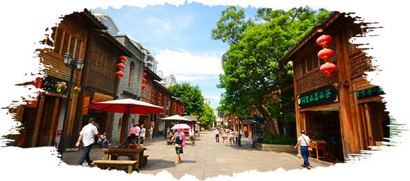
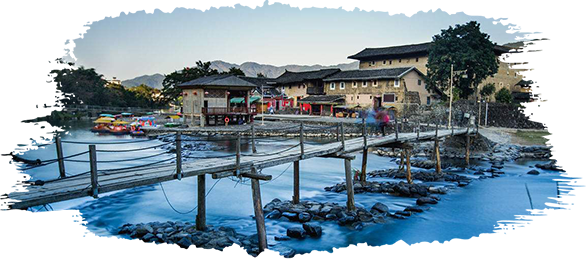
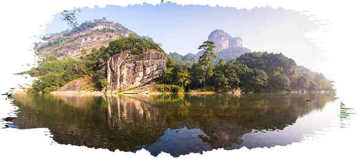

————出发，遇见福建————
Set out to meet Fujian
福州
福建的省会城市，在时间的长河里留下了浓墨重彩的印记。当你踏上三坊七巷七巷的石板路，驻足于流水奔腾的闽江边,漫步在绿茵蔽日的国家森林公园,穿梭在风景灵秀的鼓山和鼓岭找寻着马尾船政和罗星塔的动人故事,你都会被这座城市的底蕴所惊叹。

厦门
别称"鹭岛”,是许多旅游者脑海中美好深刻的记忆。中山路街景繁华美食扎堆鼓浪屿枝独秀情调颇浓,厦]大学兼容中西秀甲方，环岛路空气清新游人如织。都说小城故事多,请你在这里静享时光可好。

漳州
闻名的”鱼米花果之乡”,盛产各种水果及海珍品。这里还有灵山碧水的南靖云水谣以及中国为数不过的滨海火山地质地貌风景旅游区,热情的当地人等着你的到来。

南平
以武夷山脉为主体的闽北大山带,坐拥瑰丽的丹霞地貌和独特的喀斯特地貌景观。都说“北有泰岳、南有武夷”,在南平的武夷山,峰奇石峻,山清水秀，人杰地灵,闻名遐迩,无愧于世界自然与文化遗产的风采，登高远眺闻名。
